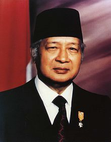

SOERHARTO
THE SECOND PRESIDENT OF INDONESIA

soeharto profile when he was a second president
here is timeline for soeharto's life
- 8 June 1921 soeharto was born
- 1942 joined the Dutch colonial army
- 1945 he fought in the guerrilla forces seeking independence from the Dutch
- 1950 Suharto had distinguished himself as a battalion commander in central Java and achieved the rank of lieutenant colonel.
- 1957 becoming a colonel
- 1960 becoming a brigadier general
- 1962 becoming major general
- 1963 Suharto was routinely appointed to head the army strategic command, a Jakarta-based force used to respond to national emergencies. Indonesia’s leader, President Sukarno, had meanwhile cultivated close ties with the Indonesian Communist Party (PKI) and with China, but the army had remained strongly anticommunist.
- 30 september 1965 a group of disgruntled left-wing army officers and some PKI leaders tried to seize power in Jakarta, killing six of the army’s seven senior generals. Suharto was one of the highest-ranking officers to escape assassination, and, as head of the strategic command, he led the army in crushing the coup within a few days.
- 1967 soeharto became to a five-year term as president.
- 1972 1972 Suharto had succeeded in restoring steady economic growth while also reducing the annual rate of inflation from a high of 630 percent in 1966 to less than 9 percent. In foreign affairs, he pursued an anticommunist, pro-Western stance
- 1967 it became a founding member of the Association of Southeast Asian Nations (ASEAN)
if you have time, you should read more about this incredible human being on his Wikipedia entry